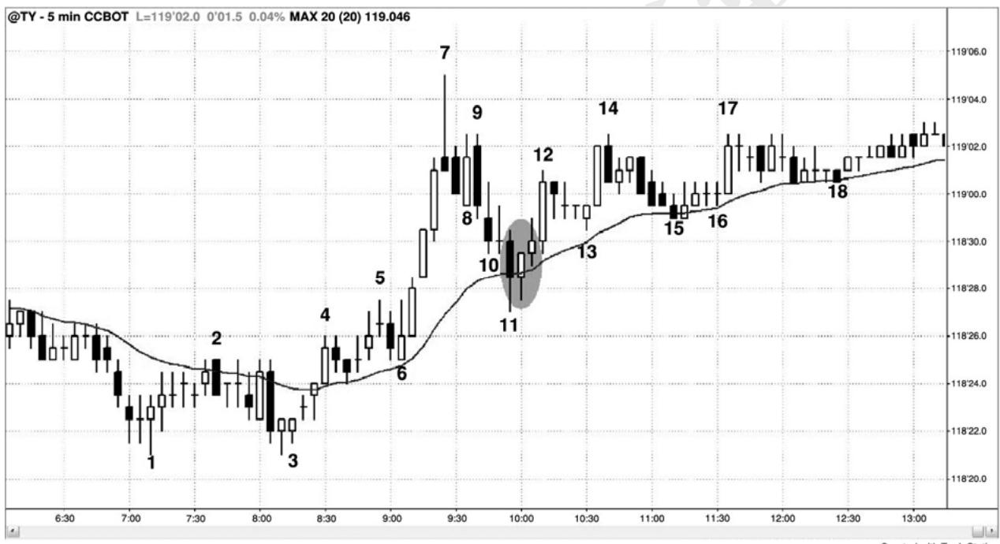
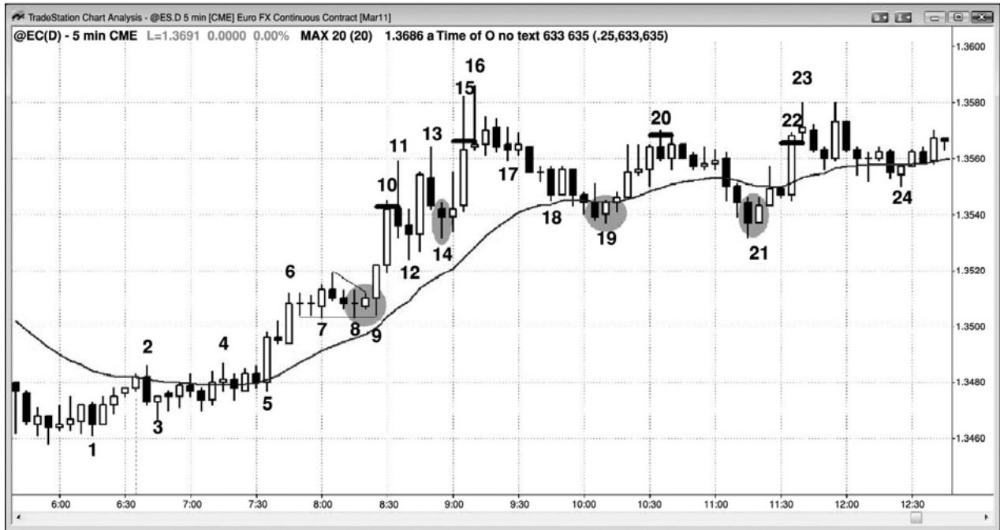

第30章 获利了结和利润目标¶
第 30 章 获利了结和利润目标
所有回撤和反转都开始于获利了结。经验丰富的交易者们伺机在市场运动强劲时离场，然后在回撤重新入场。举例说明，如果一轮多头趋势刚刚开始，而且特别强，那么当市场向上突破最近的波段高点时，多头将会买进更多。然而，当趋势成熟，形成更多双向交易时，他们就不会再使用止损单在最近的波段高点上方买进。相反地，随着涨势趋弱，他们会伺机在那个高点上方、甚至略低处部分获利了结。如果大部分多头都在前一高点附近获利了结，而不是在突破时买进更多，那么市场就开始出现回撤。这就意味着多头宁愿在更低的价位买进，而他们认为即将出现的回撤将允许他们在更低价位买进，于是他们不再愿意追逐市场上涨，在先前的高点上方买进。如果获利了结的量非常巨大，如果同时出现激进地、持续地做空，那么回撤将会演变为大的调整（交易区间），甚至是反转。多头也伺机在任意的强势架构获利了结，比如在大型多头趋势棒的收盘价或略上方，或者在下一两棒的收盘价，尤其是当下一棒是小型棒，或者拥有空头收盘时。他们将会在下一棒的低点下方进一步获利了结。因此，很多大型趋势棒（它们是突破尝试）之后，会形成小型棒或小幅回撤，也就意味着突破失败了。交易者们还会将保护性止损设在前一棒的低点下方，最近的更高低点下方，或者设在盈亏平衡点。这是因为，如果市场在到达他们的目标前强势反转，那么他们可能会认为自己能够离场，然后在更好的价位再次买进。新建空头头寸的空头看到相同的走势，通常开始寻找刮头皮机会，在新的高点或强多头趋势棒的收盘价附近卖空。随着回撤幅度变得越来越深，他们就开始把部分头寸波段化。刚开始，他们通常会被止损踢出自己交易的波段部分，但是，当调整变得越来越深，或者当趋势最后反转时，他们最终将获得较大的波段利润。
在空头趋势中，交易者们的行为类似。当（空头）趋势强劲时，空头会在波段低点下方做空，但是当趋势变弱时，他们会在最近的波段低点附近及其下方买回自己的空头头寸，准备在更高价位再次做空。多头刮头皮者将在新的低点买进，并且在小幅上涨时离场，在他们离场的价位附近，空头再次做空。多空双方都在等待一条相对较长的空头趋势棒，突破至一个新的低点，双方将在那条空头棒的收盘价买进。当空头趋势中的反弹变得越来越强时，多头将更愿意把部分头寸波段化。在某个点处，市场将转变为大的多头波段或多头趋势，上述过程将在相反的方向开始。理解产生突破的趋势棒，是交易者能够获得的最重要的技能之一。交易者们需要能够判断突破是否可能会成功，是否会遇到获得了结者而回撤，或者是否会引起反转。这些情况都在这三本书中相应章节有细致的讨论。
当你入场一笔交易时，你的目标是市场在击中你的保护性止损前到达你的利润目标。每当你持有头寸时，总应有保护性止损在市场中处于有效状态。与保护性止损不同，利润目标可以设在市场中，也可设在你的头脑中。举例说明，如果你正在一轮强趋势中做波段交易，那么你可能在上涨过程中把你的头寸部分获得了结（这是在逐步退出你的交易），同时你可能选择持有部分头寸，直到出现反向交易信号。一旦那个反向信号触发，你就应该离场。极少有交易者有能力在退出可获利的波段头寸的同时将头寸反转，入场一笔反向交易。
一入场，刮头皮者们就常常设好双向订单（OCO）。举例说明，如果他们在交易成功率为60%或更高的回撤买进AAPL，他们可能以 50美分的风险博取100美分的刮头皮利润。一入场，他们的初始订单可能自动产生一张卖出止损订单，位于入场点下方 50 美分处，同时产生一张卖出限价订单，位于入场点上方 100 美分处。由于这种包围单（bracket order）是 OCO 订单，一对订单中一张被执行，另一张就自动取消。无论你如何管理自己的订单，在每次入场和离场之后，你都应该检查自己的账户，确保你当前的头寸和订单是你认为应该的那样。你不希望在持平（没有头寸）的情况下仍然有一张买进限价单在市场中保持有效状态，你认为它应该已经自动取消。千万不要认为经纪人的软件在百分之百的时间里都像预期的一样有效，不要认为自己设定的交易和订单都会百分之百地被正确执行。所有订单都难免存在失败率，当你认为自己的订单应该已被执行时，总要确认是否如你预期的那样。
所有交易都应以交易者方程为依据，初学者应该寻找胜率为 60%或更高、回报至少与风险一样大（最好是风险的两倍）的交易架构，尽管交易者方程非常有利的架构平均每天只出现几次。举例说明，对于欧元外汇货币期货或外汇等价产品欧元/美元，如果最近的平均日区间约为 100 个跳动（常称作点子
P281
对于刮头皮交易，交易管理不同于波段交易。做刮头皮的交易者认为获利潜能是受限的，要么因为没有趋势，要么因为他正在做逆势交易。在交易区间中刮头皮是一种可行的策略，而只有最老练的交易者才可考虑逆势交易。如果交易者能够耐心等待回撤，然后在趋势方向入场，而不是寄希望于逆势交易将会成功，那么赚钱的机会要多得多。一旦你认为存在趋势，你就必须接受一点，即 80%的反转尝试将会失败，演变为旗形。对于大部分交易者来说，这使得使用止损单逆势入场并且一致获利，几乎成为不可能。举例说明，如果认为强多头趋势顶部的一条小型空头反转棒将引起市场向均线回撤，而且你在那一棒低点下方 1 个跳动处使用止损单做空，那么你必须认识到，非常精明的多头设定限价单在那一棒的低点处买进，胜算在他们一方。如果你交易电子迷你，那么为了在你的空头交易上赚到 8 个跳动的利润，你需要市场跌至那一棒下方 10 个跳动处，但是在那种情况发生前，强多头趋势中的大部分回撤都会演变为高点 1 或高点 2 买进架构，于是你将会赔钱。如果你看到一轮强趋势，并且希望在回撤买进，那么不要自欺欺人地认为当你在等待买进架构形成时，能够足够聪明地做一笔可获利的空头刮头皮交易。你难免会在那笔空头刮头皮交易上赔钱，而且在买进架构形成时错过良机。你将希望市场继续下跌，拒绝承认回撤即将结束，你将错过利润可能为几点的多头交易。
当趋势已经转变为交易区间后，逆势交易实际上不再是真正的逆势交易，因为趋势已经暂时结束。但是，很多交易者努力去摸顶抄底，认为市场即将进入交易区间，认为自己的风险很小，只是发现自己的账户慢慢被销蚀。
对于交易者来说，无论何时入场，都需要一个获利了结的计划，否则市场最后将会反转，他们的利润将会转变为亏损。交易管理完全依赖于交易者方程，风险、回报和胜率的任意组合，只要能够产生一致的利润，就是一种有效的策略。作为一条一般性规则，大部分交易者应该限制自己只选择风险至少与潜在回报一般大的高胜率交易。理想情况下，交易者们应该寻找胜率至少为60%，潜在回报约为风险两倍的架构，但是，对于回报与风险差不多一样大，也可能略大一点的架构，他们通常也不得不勉强认可。这最常出现于趋势的回撤中。
当在强趋势中做波段交易时，容易过早地获利了结，因为很难相信利润可能增长至风险的 6 倍或更多。然而，当趋势强劲时，实际利润可能就是那样高。如果你认为趋势很强，那么在账面利润达到初始保护性止损的两倍时了结一半头寸，就是一种合理的选择。举例说明，在电子迷你中，如果你的初始止损为两点，而且你在一轮强空头趋势中你认为是一个大型下跌波段的起点处做空，那么在入场点下方 4 点处使用限价单了结一半头寸。在那一点处，跟踪调整你的止损。在初始止损规模的 3 倍，即账面利润达到 6 点时，再了结四分之一，然后让最后的四分之一自由奔跑，仅当强买进信号形成或者当天收盘（无论哪个条件首先满足）时离场。不过，如果你对逐步离场感觉不适，那么在利润达到风险规模的两倍处退出整个头寸，也是一种合理的策略。你总可以在下个信号处再次入场。
每笔交易的交易者方程，随着市场逐个跳动的变化而改变。如果交易者方程仍然有利，但是不像原来那样强，那么老手们常常会调紧自己的保护性止损，或者在小幅获利后离场。
如果交易者方程到达临界点，那么交易者们应该尽快离场，或者有所获利，或者小幅亏损。如果交易者方程变为负值，那么他们应该立即在市价离场，即便那意味着接受亏损。决定是否离场的一种方法是，想像你并未持有头寸。然后观察市场，判断自己在市价入场、使用现在的保护性止损是否明智。如果你认为不明智，那么当前头寸的交易者方程就比较弱，或者是负的，你就应该离场。
牢记一点，利润目标是保护性止损的反面，它在那里你保护你的。它强迫你在交易者方程仍然为正的某个时间离场，防止你持有太长时间，直到市场返回入场点时才离场，或者更有甚者，直到成为亏损交易时才离场。对于大多数交易者来说，就像时刻令保护性止损在市场中有效一样，令获利了结限价单总是在市场中有效也比较好。

当存在趋势时，在市场向均线回撤时入场是一种可靠的策略，前提是胜率通常至少为 60%，潜在回报比风险大。图 30.1 中，从棒 6 开始的强 4 棒多头尖峰之后是一波向均线的迅猛回撤，其中棒11后面的多头内包棒是一条合理的做多信号棒。由于那一棒的高度为4个跳动，所以初始风险是 6 个跳动。（译注：在信号棒上方 1 个跳动入场，信号棒下方 1 个跳动设定保护性止损，4+1+1＝6）有些交易者把这个架构看作一个高点 2，有些交易者把它看作一个紧凑的楔形，其中棒8和棒10低点是头两次下推。斐波那契交易者把它看作一个 62%回撤，而且它也是对棒 4 高点的突破测试，差 1 个跳动就触及盈亏平衡止损。每当回撤结束时，对于回撤底部的位置，通常存在数学逻辑理由的交汇。不同的公司有不同的理由，但是当存在多个理由时，足够多的公司将在那一区域买进，于是他们将压倒空头，回撤结束。
市场很可能在棒 9 高点找到阻力，空头把它看作棒 7 至棒 8 低点的下跌尖峰之后的下跌通道的起点。他们正希望形成一个双重顶空头旗形，很多人等待市场测试棒 9 高点时才会做空。空头的这种临时缺席，增加了市场到达那一价位的可能性。棒 9 高点刚好比信号棒高点高出 10 个跳动，恰好是使用 8 个跳动利润（1 点的 4/32）的限价单离场所需的跳动数。主要市场中的一切都拥有数学基础，因为那么多的交易都是由计算机完成的，在决策制定过程中，计算机都不得不依赖数学。

对于欧元外汇期货（或者外汇等价产品，欧元/美元），回撤买进是一种可靠的交易策略。对于欧元，如果交易者仔细选择架构，那么他们常常能够获得大约为止损两倍的利润目标。图30.2中，注意棒9在突破三角形后毫不犹豫地暴涨。那条小多头内包棒是买进信号，它的高点刚好比那个岩架的低点高出 8 个跳动，所以风险是 10 个跳动。由于那条内包棒是买进信号，所以在棒 9 向上超越它并且成为一条外包棒时买进是合理的。交易者可能会在入场点上方20个跳动处设定获利了结限价单，该订单可能在棒10顶部附近被执行（水平短横线处）。
P283
然后，那位交易者可能在棒 14 双重底买进（它也是一个高点 2，棒 12 是高点 1，是棒12小型多头旗形被向上突破后的回撤），在棒15离场，获利20个跳动，刚刚超过棒13高点。
棒 14 信号棒有 14 个跳动高，所以初始风险是 16 个跳动。由于这是趋势中的一波回撤，所以我们假定成功率至少是60%。
棒 19 是一条多头反转棒，是强多头趋势中第一次向均线回撤。该棒的高度为 8 个跳动，所以风险是10个跳动，交易者可能会在略低于棒20顶部处离场，刚好比信号棒高点高出22个跳动。由于限价单位于信号棒高点上方 21 个跳动处，所以那些多头可能会在获得 20 个跳动的利润后离场。此时，市场很可能是处于交易区间中，原因是棒16是一个下跌尖峰（十字星顶是一个上涨尖峰，然后一个下跌尖峰的组合，两个尖峰都位于同一棒内），截止棒 19 的下跌处于一条通道内。市场很可能测试通道顶部，形成一个双重顶，交易区间很可能延续，事实如此。因此，在棒 19 上方做刮头皮交易可能会更好。通道顶部下方的空间，允许实现20 个跳动的利润目标，所以这是退出整个多头刮头皮交易的合理位置。
交易者们可能会在棒 21 双棒反转上方再次买进，因为它与棒 19 形成一个双重底，而且是第一条均线缺口棒（趋势中高点位于均线下方的第一棒）。风险是 11 个跳动，交易者们可能会在略低于棒 22 高点处以 20 个跳动的利润离场。
如果交易者们在棒 9 三角形突破买进，那么一旦看到双棒多头尖峰的力量，他们就可能改变自己的计划。他们可能会在账面利润达到 20 个跳动时了结一半头寸，然后在市场继续上涨 10 个或 20 个跳动时设定限价单退出另外的四分之一头寸，而不是在获得 20 个跳动的利润后了结全部头寸。然后，他们会让剩余头寸自由奔跑，直到当日收盘，或者直到出现明确的做空信号。棒 16 处的卖出高潮很可能令市场向均线回撤，对于交易者来说，在棒 16（或者在一棒以后的空头内包棒）下方离场，在均线处两次买进，是合理的选择。然而，如果他们采用的是逐步离场的策略，现在只剩下四分之一的头寸，那么他们也可继续持有，直到收盘，因为他们可能知道买家很可能在均线处重返市场，而那些买家可能有能力令市在收盘前形成一个新的高点。
棒 21 做多架构仍然处于交易区间内，但是它与棒 19 形成一个双重底多头旗形，所以市场很可能在收盘前到达一个新的高点。虽然交易者可能会根据大分突破交易区间的尝试将会失败这一正确的假设，在获得20跳动的利润后退出整个头寸，但是，这波两条腿调整更有可能引起成功的突破，而且强多头趋势日常常在当日结束时反弹至一个新的高点。所以，交易者可以把四分之一到一半的多头头寸波段化，以防突破成功。